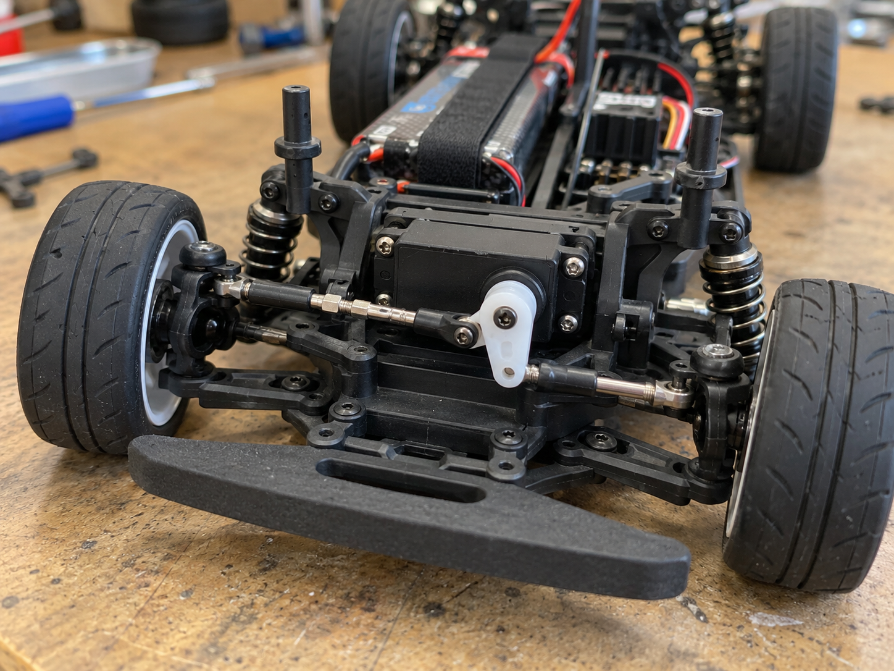
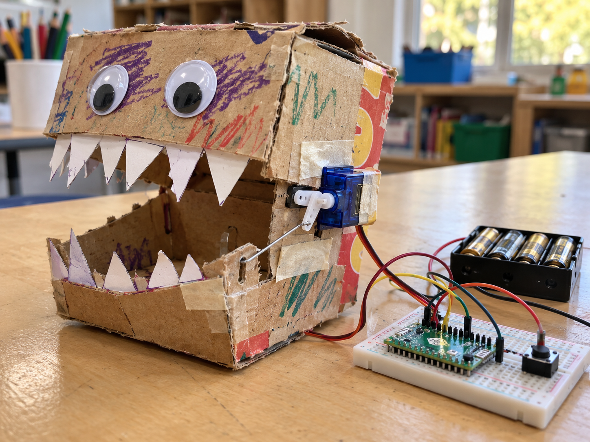

Radio-controlled steering
DetectRead steering command
DecideWhich way should it turn?
DoSet the steering position
A positional servo moves its arm, called a horn, to a chosen position and holds it there.
Short pulses on its signal wire set the position. The motor and position control are built into the case.
Use it for steering, pointing or opening a flap. A continuous-rotation servo controls speed instead; it cannot use this example to choose an angle.


from gpiozero import Servo
from time import sleep
servo = Servo(16)
servo.mid()
sleep(2)from picozero import Servo
from time import sleep
servo = Servo(15)
servo.mid()
sleep(2)